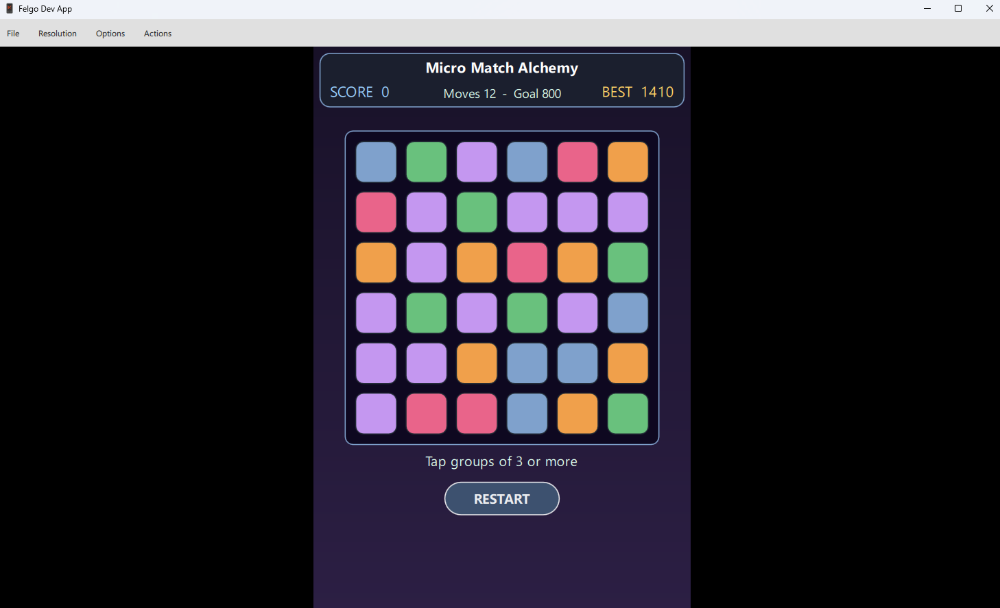
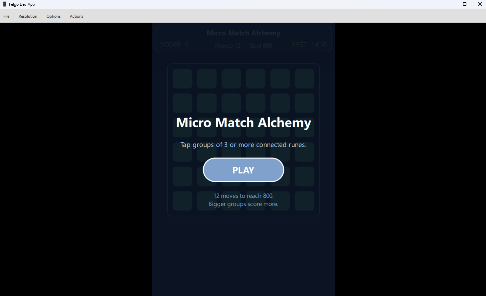
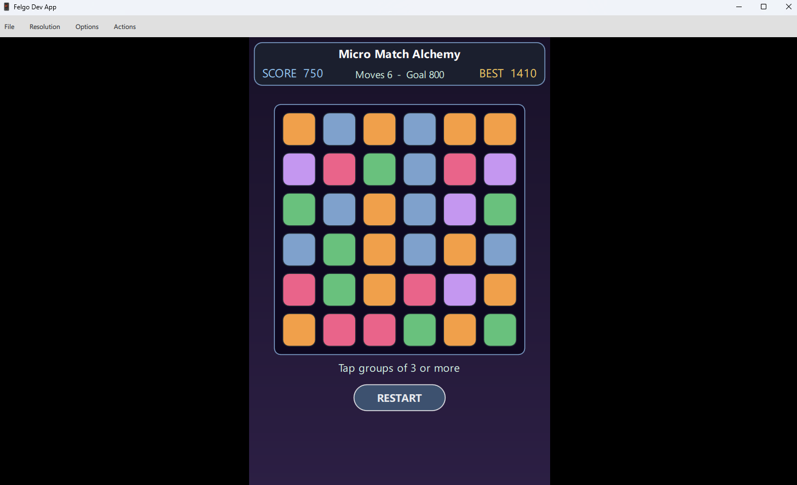
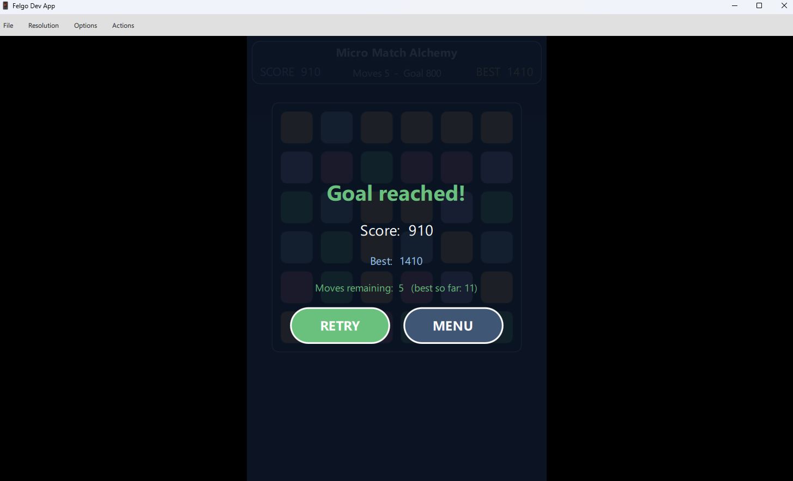
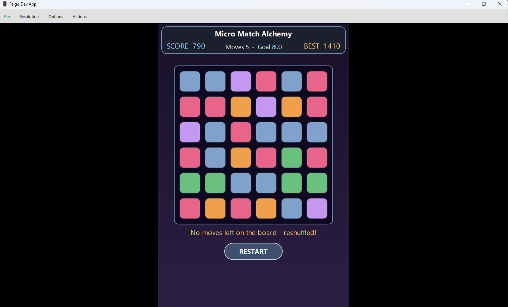

This is the most logic-heavy of the five challenge prototypes; and the most teachable. Every milestone (board generation, flood-fill, gravity, refill, scoring) is a separate runnable checkpoint.

group.length * group.length * 10; bigger groups score disproportionately more.playing until either the score goal is met (won) or the move budget runs out (lost). RESTART returns to a fresh playing board.
File -> New File or Project -> Felgo Games -> Empty Felgo Project. Name it MicroMatchAlchemy. Felgo SDK 4.x requires a config.json next to the binary at runtime; ship a stub in the project root and have main.cpp self-heal it to multiple paths so the SDK can find it regardless of CWD (current working directory). Same pattern as the other four prototypes.
The first launch shows the title menu. PLAY enters playing; QUIT closes the app.

qml/
Main.qml
scenes/GameScene.qml
components/{RuneTile,Hud,MenuOverlay,GameOverOverlay}.qml
logic/Board.js.pragma library
function indexAt(row, col, columns) { return row * columns + col }
function rowOf(index, columns) { return Math.floor(index / columns) }
function columnOf(index, columns) { return index % columns }
var _seed = 0
function setSeed(s) { _seed = s | 0 }
function _rand() { /* mulberry32: small fast PRNG (pseudo-random number generator) */ return 0 }
function newRune(runeTypes) { return Math.floor(_rand() * runeTypes) }
function makeBoard(rows, columns, runeTypes) {
var b = new Array(rows * columns)
for (var i = 0; i < b.length; ++i) b[i] = newRune(runeTypes)
return b
}QJSEngine without spinning up a full QML scene. _extras/tests/tst_Board.cpp asserts exact-equality on a seeded board, on flood-fill outputs, and on the gravity-refill column compaction.
procedure findGroup(board, startIndex, rows, columns):
wanted := board[startIndex]
if wanted < 0: return empty list
open := stack containing startIndex
seen := empty set
group := empty list
while open is not empty:
idx := pop(open)
if idx in seen or board[idx] != wanted: continue
add idx to seen
append idx to group
for each n in neighbours(idx, rows, columns): // 4-way
push n onto open
return groupfunction neighbours(index, rows, columns) {
var r = rowOf(index, columns), c = columnOf(index, columns)
var out = []
if (r > 0) out.push(indexAt(r - 1, c, columns))
if (r < rows - 1) out.push(indexAt(r + 1, c, columns))
if (c > 0) out.push(indexAt(r, c - 1, columns))
if (c < columns - 1) out.push(indexAt(r, c + 1, columns))
return out
}
function findGroup(board, startIndex, rows, columns) {
var wanted = board[startIndex]
if (wanted < 0) return []
var open = [startIndex], seen = {}, group = []
while (open.length > 0) {
var idx = open.pop()
if (seen[idx] || board[idx] !== wanted) continue
seen[idx] = true
group.push(idx)
var ns = neighbours(idx, rows, columns)
for (var i = 0; i < ns.length; ++i) open.push(ns[i])
}
return group
}board property.
Visualisation of one column. Cleared cells are -1; gravity pulls survivors down, then fresh runes fill the top:
before clear after clear after gravity refill (top)
A A A ?
B -1 C ?
C C D A
D D E C
E E ? D
B -1 ? Efunction applyGravity(board, rows, columns, runeTypes) {
var out = board.slice()
for (var col = 0; col < columns; ++col) {
var kept = []
for (var row = rows - 1; row >= 0; --row) {
var v = out[indexAt(row, col, columns)]
if (v >= 0) kept.push(v)
}
for (var writeRow = rows - 1; writeRow >= 0; --writeRow) {
var next = (kept.length > 0) ? kept.shift() : newRune(runeTypes)
out[indexAt(writeRow, col, columns)] = next
}
}
return out
}board = next fires the QML binding on every RuneTile's tileType. In-place mutation would silently miss the binding because the array reference hasn't changed.
tileType (0..4 -> colour) and emits
clicked(tileIndex) up to the GameScene. Includes a flash() function for the too-small-group feedback path.
Item {
property int tileIndex: 0
property int tileType: 0
signal clicked(int tileIndex)
width: 44; height: 44
Rectangle {
anchors.fill: parent; anchors.margins: 2; radius: 8
color: tileType >= 0 ? palette[tileType] : "transparent"
}
MouseArea { anchors.fill: parent; onClicked: root.clicked(tileIndex) }
Behavior on y { NumberAnimation { duration: 180; easing.type: Easing.OutQuad } }
Behavior on x { NumberAnimation { duration: 120; easing.type: Easing.OutQuad } }
}Behavior on x/y instead of an explicit fall animation? After applyGravity reassigns the board, every RuneTile's bound
x and y change to their new column/row positions. The Behavior turns each binding update into a smooth animated transition for free.
Repeater {
id: boardRepeater
model: gameScene.rows * gameScene.columns
RuneTile {
tileIndex: index
tileType: gameScene.board[index]
x: Board.columnOf(index, gameScene.columns) * (tileSize + tileGap)
y: Board.rowOf (index, gameScene.columns) * (tileSize + tileGap)
enabled: gameScene.phase === "playing"
onClicked: gameScene.selectCell(index)
}
}function selectCell(index) {
if (phase !== "playing") return
var group = Board.findGroup(board, index, rows, columns)
if (group.length < 3) {
boardRepeater.itemAt(index).flash() // red overlay; no move spent
return
}
score += Board.scoreFor(group.length)
var next = board.slice()
for (var i = 0; i < group.length; ++i) next[group[i]] = -1
next = Board.applyGravity(next, rows, columns, runeTypes)
board = next
moves -= 1
checkEnd()
}
function checkEnd() {
if (score >= goalScore) { phase = "won"; gameWon (score, moves) }
else if (moves <= 0) { phase = "lost"; gameLost(score) }
}phase and shows either the win or the lose copy, plus a TRY AGAIN button that calls startGame().

Main.qml's onGameWon, store both the highest score AND the fewest moves used on a winning run:
onGameWon: function(finalScore, movesLeft) {
var best = storage.getValue("bestScore") || 0
if (finalScore > best) storage.setValue("bestScore", finalScore)
var bestMoves = storage.getValue("bestWinMoves") || -1
if (bestMoves < 0 || movesLeft > bestMoves)
storage.setValue("bestWinMoves", movesLeft)
}Board.hasAnyMove. If no group of 3+ exists anywhere on the board the player is stuck through no fault of their own; the scene regenerates the board and shows a transient toast so the player understands what happened.
procedure afterClear():
if not Board.hasAnyMove(board, rows, columns):
board := Board.makeBoard(rows, columns, runeTypes)
hintToastActive := true // shows for 2.2 s
startHintToastTimer()
SoundEffect {
id: clearSfx
source: "../../assets/snd/clear.wav"
volume: 0.6
}assets/snd/ to enable. Missing file logs one warning at load and play() becomes silent.
Behavior on y was on an
Item without an actual y binding; I'd anchored the tile via
anchors.top: parent.top; anchors.topMargin: row * 48 and anchors don't fire Behavior on y.
Fix: use direct x / y bindings (computed from Board.rowOf / Board.columnOf) on every tile. The Behavior fires when those bindings change.
Lesson: Behavior on x/y works on direct property assignments, not on anchor side-effects. If a smooth transition disappears after an apparent code re-arrangement, that's the first thing to check.
logs/run_*.log written on every launch.